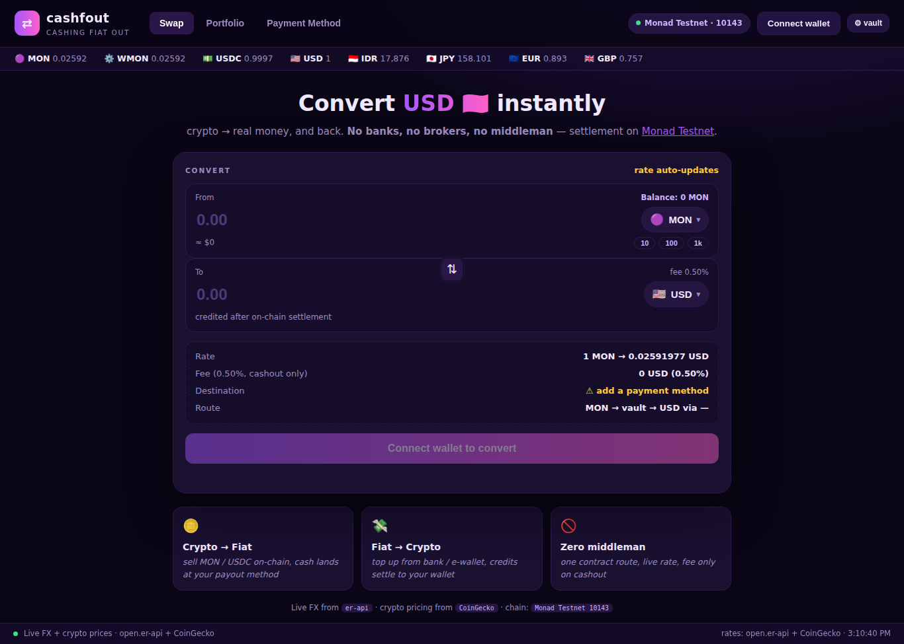
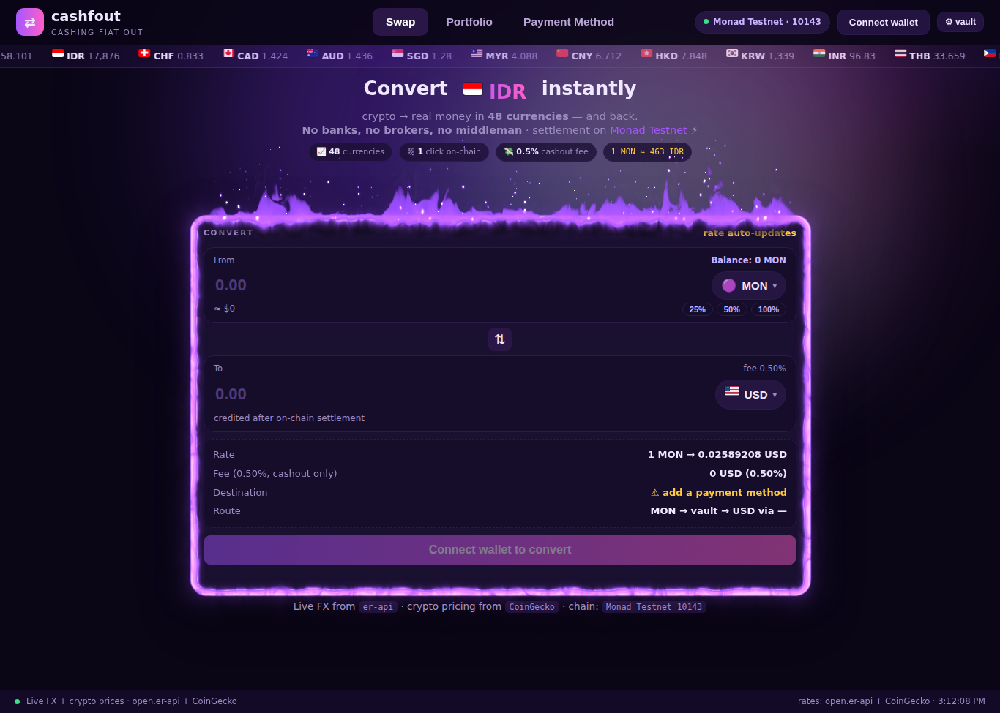

Tugas Redesain — Breakdown Visual
Redesain halaman konversi cashfout (crypto ⇄ fiat dApp)
Studi kasus: web app https://cashfout.pages.dev · armandomarais · 8 Oktober 2026
SEBELUM — v1

Konten asli (first build)
Stack tengah datar: hero kecil, card CONVERT tanpa penanda fokus, aksen ungu/kuning/merah bersaing, hierarki flat, CTA rendah kontras.
SESUDAH — hasil redesain

Hasil redesain (live)
Satu fokus terang (card + flame-wrap ungu), tipografi berjenjang, satu aksen primer + gold sebagai sinyal data, seluruh aksi muat tanpa scroll.
1 Elemen Desain yang Ditonjolkan
- Negative space — jarak vertikal dikalibrasi (gap 72 px antara pills dan api) agar elemen fokus punya ruang "bernapas" dan gutter mati di kiri-kanan hilang karena kolom konten dimaksimalkan. Ruang kosong difungsikan sebagai jeda antarblok, bukan sisa layout.
- Line — garis tepi menyala (border glow) yang di-puncak-kan jadi flame-wrap: satu kontur penutup card yang sekaligus memisahkan area "cerita" (hero) dari area "aksi" (converter). Garis horizontal ticker dan pemisah dashed pada blok rate dipakai terbatas sebagai pengelompok, bukan dekorasi.
- Typography — skala tipografi dibuat berjenjang dan kontras-naik: headline 26–36 px, sub-copy digedein ke 14.5–15.5 px, nav 15.5 px bold, angka kursif monospace untuk rate. Satu families, tiga level — pembaca tahu mana judul, mana instruksi, mana data.
- Warna — palet didisiplinkan dari multi-aksen (ungu+magenta+kuning+merah) jadi satu primer (gradien ungu→magenta) + satu sinyal (gold, khusus angka/rate) di atas dasar violet gelap.
- Motion — dua gerak fungsional: ticker marquee (bukti data live) dan api yang berkedip pelan (menandai card aktif). Elemen lain diam, supaya gerak tidak saling rebut.
2 Prinsip Desain yang Diterapkan
Visual hierarchy dibangun tiga tingkat: (1) headline "Convert ___ instantly" sebagai pintu masuk, (2) pills statistik sebagai dukungan kredibilitas, (3) card CONVERT sebagai tujuan akhir — diperkuat focal point lewat flame-wrap: area paling terang dan paling dinamis di layar sengaja ditempatkan tepat di objek aksi, sehingga alur mata audiens dibajak: teks → janji → api → card → tombol CTA. Elemen non-aksi (footer kredit, ticker) ditekan kontrasnya.
Contrast dipakai sebagai alat navigasi, bukan hiasan: putih vs ungu gelap untuk teks, gradien terang untuk tombol primer, gold satu-satunya untuk angka "hidup" (rate, 1 MON≈IDR). Prinsip turunan yang menopang: proximity (From⇄To→CTA disatukan dalam satu kartu = satu tugas), repetition (pill, radius, border konsisten), dan dominance (satu elemen api-terang di layar, yang lain tunduk).
3 Solusi Visual
- Tidak ada focal point di versi lama — mata mengembara (headline → label kuning → card → 3 kartu fitur). Solusi: flame-wrap + border glow membuat converter card jadi satu-satunya magnet, dan 3 kartu fitur dihapus karena mengencerkan fokus.
- CTA rendah kontras & kejauhan — tombol utama nyaris seperti disabled dan butuh scroll. Solusi: seluruh fold dikompaksi (rhythm dipangkas bertahap 150→72 px, padding diperkecil) sampai zero-scroll: headline, card, dan tombol "convert" tampil dalam satu layar penuh.
- Hierarki datar antar-teks — sub-copy 12.5 px abu tenggelam. Solusi: font diperbesar bertingkat dan warna teks pendukung dinaikkan kontrasnya (muted → lavender terang), angka dipindah ke monospace agar terbaca sebagai data.
- Aksen liar — kuning + merah + emoji bendera rusak (Windows merender huruf "ID/CH"). Solusi: emoji diganti gambar bendera CDN, kuning dihemat khusus rate, merah dihapus.